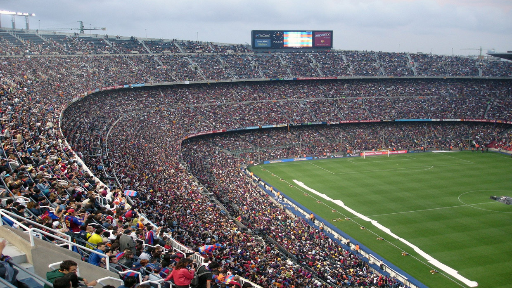

Green Bay Packers
Team salary cap breakdown
The Green Bay Packers have been known to be among the NFL's most frugal football teams when it comes to their salary cap management. Currently, the Packers have $183,885,279 in active contracts. The Packers are professional sports' only publicly-owned franchise, meaning the team is comprised of thousands of shareholders from across the country.
The NFL uses a "hard cap", meaning no team can exceed it for any reason. Because of the nature of the sport, the NFL has more leverage over its players in collective bargaining. Currently, the Packers spend 50.55% of their cap space on offensive players, and 40.09% on defensive players. Remaining figures are given to special team players.
Packers' cap breakdown
| Player | Cap hit | % of cap |
|---|---|---|
| Aaron Rodgers | $21,642,000 | 10.61 |
| Za'Darius Smith | $17,250,000 | 8.46 |
| Davante Adams | $16,475,000 | 8.08 |
The Packers are famous for being one of only a few teams that almost never uses the franchise tag, a cap tool exclusive to the NFL.
Franchise tag
The NFL uses what is known as a "franchise tag" as a mechanism of limiting player movement. Teams can use the tag on one of their free agents they are afraid of losing. A team has the right to use tag on only one player per season. The player becomes binded to the tagging team for the duration of that season.
What is a tagged player's salary?
Each year, the franchise tag numbers get updated as the salary cap goes up and down. The amount is calculated as 120% of their current salary, or the average of the five highest paid players at their position over the previous five seasons, whichever is larger.
Contract amounts
| Position | Amount |
|---|---|
| QB | $26,824,000 |
| RB | $10,278,000 |
| Wide receiver | $17,865,000 |
| Tight end | $10,607,000 |
| Offensive line | $14,781,000 |
| Defensive line | $17,788,000 |
| Defensive tackle | $16,126,000 |
| Linebacker | $15,828,000 |
| Cornerback | $16,338,000 |
| Safety | $11,441,000 |
| Kicker/Punter | $5,019,000 |
Contact
Ask me any questions directly at (214)-708-2810
Send me an email at evanmsiegel@gmail.com